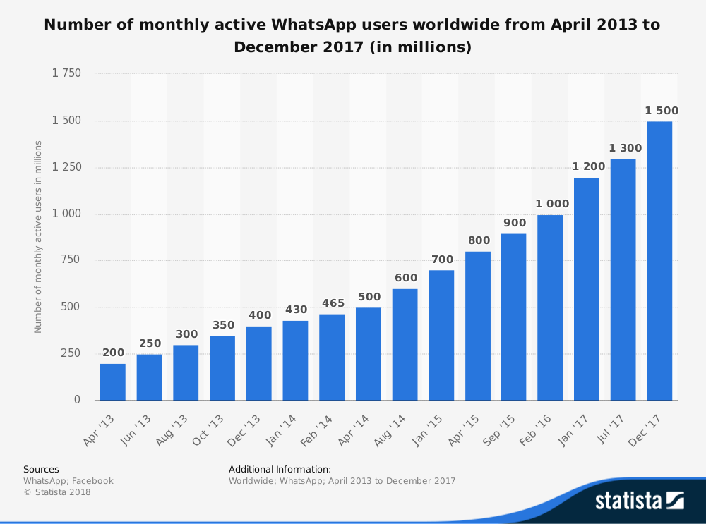

Já se passaram 9 anos desde que o WhatsApp foi lançado. Tudo começou em 2007, quando Jan Koum e Brian Acton decidiram abandonar a Yahoo! para descomprimir e viajaram por África do Sul. Eventualmente tiveram de regressar ao mundo real. Candidataram-se a várias posições no Facebook, nunca sendo aceites em nenhuma.
No início de 2009, após comprar um iPhone, Koum apercebeu-se do potencial da indústria das aplicações na App Store. Ele visitou o seu amigo Alex Fishman e ambos começaram a formar ideias para a nova app. Koum conseguiria tratar da parte do backend, mas ele precisava de um developer de iOS. Fishman apresentou-o então a Igor Solomennikov, um developer russo que tinha encontrado no site RentACoder.com. Foi Koum quem quase instantaneamente teve a ideia de o nome da app ser “Whatsapp” pois soava a “what’s up”, e a 24 de fevereiro ele incorporou a WhatsApp Inc. na Califórnia.
Contudo, as primeiras versões da aplicação não foram bem-sucedidas, o que levou Koum a questionar por várias vezes a continuação do projeto. Nesses momentos valeu-lhe Acton que o encorajava a não desistir. A agosto de 2009 é então lançada a nova versão da app WhatsApp 2.0 e o número de utilizadores cresceu subitamente para cerca de 250,000. Entretanto, Brian Acton conseguiu um financiamento de US $250,000 em financiamento inicial, o que lhe garantiu a posição de cofundador. Após meses em fase beta, a aplicação é lançada a novembro de 2009 exclusivamente na App Store para o iPhone. Mais tarde Koum viria a contratar o amigo Chris Peiffer para desenvolver a versão BlackBerry, que chegou dois meses depois.
A fim de evitar um crescimento muito rápido o WhatsApp passou de um serviço gratuito para pago, e a dezembro de 2009 foi adiciona a possibilidade de enviar fotos. Assim, no início de 2011 a WhatsApp passou a pertencer ao top 20 das aplicações da App Store norte americana da Apple.
Em abril de 2011, após meses de negociações, a Sequoia Capital investiu US $8 milhões por mais de 15% da empresa. A fevereiro de 2013, aplicação atingiu os 200 milhões de utilizadores e a Sequoia voltou a investir mais US $50 milhões, ficando o WhatsApp avaliado em US $1,5 mil milhões. No final de 2013, a empresa afirmou ter atingido os 400 milhões de utilizadores ativos a cada mês.
A 19 de fevereiro de 2014 o Facebook anunciou que iria adquirir o WhatsApp por US $19 mil milhões, a sua maior aquisição até aos dias de hoje. O Facebook pagou US $4 mil milhões em dinheiro, US $12 mil milhões em ações do Facebook e US $3 mil milhões em ações restritas concedidas aos fundadores do WhatsApp, Koum e Acton. Contudo, apenas dias após a aquisição, os utilizadores foram vítimas de uma perda do serviço, o que levou a muita revolta nas redes sociais.
A compra também fez com que vários utilizadores mudassem ou experimentassem outros serviços de mensagens, como a Line e a Telegram. Numa apresentação no Mobile World Congress em Barcelona, Mark Zuckerberg, CEO do Facebook, afirmou que esta aquisição tinha como objetivo aproximar-se da sua visão para a Internet.org - serviços básicos de internet gratuitos para uso de todos.
Em agosto de 2014, o WhatsApp tornou-se na aplicação de mensagens mais populares do mundo, com mais de 600 milhões de utilizadores ativos. No início de 2015, o WhatsApp atingiu os 700 milhões de utilizadores ativos mensais com mais de 30 mil milhões de mensagens enviadas todos os dias. O crescimento da WhatsApp e outros serviços designados por OTT (Over The Top media services) era tal que em abril a Forbes previu uma perda de US $386 mil milhões por parte do setor de telecomunicações. Nesse mesmo mês o Whatsapp atinge os 800 milhões de usuários ativos, em setembro cresce para 900 milhões e, em fevereiro de 2016, aumenta para um milhar de milhão de utilizadores. Neste momento, o WhatsApp tem mais de 100 milhões de chamadas de voz a serem feitas diariamente.
Apesar deste excelente crescimento, a 18 de maio de 2017 a Comissão Europeia multou o Facebook em €110 milhões por “enganá-la” durante aquisição da WhatsApp em 2014. Aquando a compra, o Facebook alegou que era “tecnicamente impossível combinar automaticamente informações de utilizadores do Facebook e do WhatsApp”, algo que se veio a verificar no verão de 2016. O Facebook reconheceu a violação, mas disse que o erro foi "não intencional".
A maio de 2017, foi relatado que os utilizadores do WhatsApp gastavam mais de 340 milhões de minutos em videochamadas todos os dias, o equivalente a aproximadamente 646 anos. Neste mesmo ano alcança os 1.2 milhares de milhão, chegando aos 1.5 1.2 milhares de milhão em 2018. Na Figura que se segue é apresentado um gráfico que demonstra o crescimento do número de utilizadores ativos a nível mundial entre abril de 2013 e dezembro de 2017.
Figura 2.1: Crescimento dos utilizadores do WhatsApp
Em setembro de 2017, o cofundador da WhatsApp, Brian Acton, deixa a empresa para iniciar a Signal Foundation, uma organização sem fins lucrativos, e a abril de 2018, o cofundador e CEO do WhatsApp, Jan Koum, anunciou que deixaria a empresa.